임산가공기사 (2004-08-08 기출문제)
1과목: 목재이학
1. 어떤 목재의 전건비중을 0.6으로 하면 그 목재의 실질율(實質率)은? (단, 목질의 진비중은 1.5 이다.)
- 0.3
- 0.4
- 0.9
- 2.5
(정답률: 95%)

2. 목재무게가 80 g 되는 것을 건조한 결과 그 무게가 55 g으로 되었는데 그 함수율이 10 % 라고 하면 이 목재의 건조전 함수율은 몇 % 인가?
- 50
- 60
- 70
- 80
(정답률: 81%)
3. 보통 건조재에 비교하여 고온건조재의 특성이 아닌 것은?
- 수축성이 개량된다.
- 평형함수율이 높아진다.
- 흡수성이 개량된다.
- 팽창성이 개량된다.
(정답률: 100%)
4. 건조코자 하는 목재의 최종 평균함수율이 10 % 라면 최건(最乾)시편이 함수율 몇 % 일때까지 이쿼라이징(equalizing)처리를 하는가?
- 18 %
- 12 %
- 10 %
- 8 %
(정답률: 50%)
5. 목재의 함수율이 내부보다 표면이 적을때 계속하여 건조를 진행하면 표면에 생기는 응력은?
- 압축응력
- 인장응력
- 수직응력
- 전단응력
(정답률: 70%)
6. 생재를 인공 건조실에 넣고 건조를 시작할 때 Steaming 하는 목적은?
- 목재를 가능한 빨리 가열하여 내부 수분의 결합력과 표면장력을 높이기 위하여
- 표면의 수분증발을 촉진시키며 내부증기압이 상승되기 때문에
- 실온을 급속히 상승시키기 위하여
- 목재 내부의 응력제거와 수분경사를 조절하기 위하여
(정답률: 82%)
7. 전건비중이 0.50 일 때 그 목재의 최대 용적 팽윤율은?
- 8 %
- 10 %
- 12 %
- 14 %
(정답률: 34%)
8. 건조응력을 측정하는 방법 중 틀린 것은 어느 것인가?
- 프롱법
- 스라이스법
- 톰슨법
- 분할법
(정답률: 95%)
9. 수축과 팽윤에서 이방성의 원인 인자가 아닌 것은?
- 피브릴의 경사각
- 춘추재의 구성
- 수선조직
- 목재수분
(정답률: 38%)
10. 섬유방향의 열전도계수는 섬유에 직각방향의 열전도계수보다 얼마나 더 큰가?
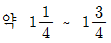
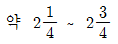
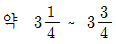
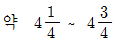
(정답률: 82%)
11. 목재의 비열 변이에 가장 영향이 적은 인자는?
- 온도
- 함수율
- 화학적 조성
- 밀도
(정답률: 40%)
12. 목재의 전기저항은?
- 목재 함수량이 증가하면 커진다
- 목재의 추출물에 큰 영향을 받는다
- 목재 함수량과는 무관하다
- 목재 함수량이 증가하면 급격히 감소한다
(정답률: 73%)
13. 소리 방사에 중요 성질인 음파저항(W)을 나타내는데 틀린 것은 어느 식인가? (단, ρ = 밀도, V = 음속, E = 탄성계수임 )
- W = ρV
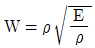
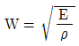
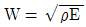
(정답률: 59%)
14. 목재의 직교 3축에서 몇개의 poisson's ratio를 생각할 수 있는가?
- 1개
- 3개
- 6개
- 9개
(정답률: 96%)
15. 목재의 한단면에 힘 P가 작용했을 때 이 힘의 수평분력 S는 다음 중 어떤 응력인가?
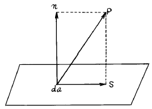
- 압축응력
- 인장응력
- 충격응력
- 전단응력
(정답률: 72%)
16. 섬유포화점 이하에서 함수율 1 % 변화에 따른 종압축강도의 변화율(%)은?
- 1
- 3
- 6
- 9
(정답률: 37%)
17. 목재의 강도를 나타낼 수 있는 가장 중요한 지표는?
- 함수량
- 비중
- 수축과 팽창량
- 해부학적 성질
(정답률: 87%)
18. 다음 그림은 응력-변형선도(應力-變形線圖, stressstrain diagram, S-S diagram)이다. σ p 는 무엇인가?
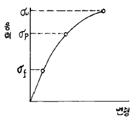
- 파괴응력
- 탄성한도
- 비례한도
- 피로한도
(정답률: 50%)
19. 목재의 열분해(熱分解) 및 착화(着火)에 관한 다음 설명 중 틀린 것은?
- 자유수는 100℃에서 끓기 시작하나, 결합수는 함수율에 따라 달라 함수율 20 % 일 때 101℃, 10 % 일 때 106℃에서 끓는다.
- 목재수분(자유수와 결합수)은 목재온도의 상승을 늦추고 열분해를 지연시킨다.
- 습윤목재는 건조목재에 비해 높은 온도에서 열분해(pyrolysis)가 일어난다.
- 목재는 약 273℃에서 산소공급이 충분하면 착화된다.
(정답률: 57%)
20. 밀도의 변화에 대해서 틀린 것은?
- 밀도에 영향을 끼치는 인자는 크게 세포벽실질, 추출물과 무기염류 함량, 함수율의 세 가지로 간단히 요약할 수 있다.
- 목재의 밀도는 각 수종간 다를 뿐만 아니라 동일 수종에서도 생육환경 등에 따라 대체적으로 다르나 전체적인 편차는 매우 적다.
- 침엽수의 비중은 연륜폭이 극단으로 좁은 재에서는 비중이 작아지게 되지만 보통 연륜폭이 증가하면 비중은 감소된다.
- 활엽수 환공재에서는 연륜폭이 클수록 비중이 커진다.
(정답률: 73%)
2과목: 목재해부학
21. 2개 이상의 관공(管孔)이 복합하여 하나의 관공처럼 보이는 집합 관공을 가지고 있는 수종은?
- 가시나무
- 팽나무
- 단풍나무
- 소나무
(정답률: 12%)
22. 다음은 교주목리 가운데 하나로써 열대산 목재에서 주로 관찰되고 있는 목리의 명칭은?
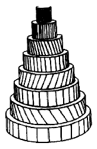
- 교차목리
- 사주목리
- 나선목리
- 교착목리
(정답률: 79%)
23. 침엽수재에만 존재하는 가도관은?
- 섬유상 가도관
- 방사 가도관
- 주위상 가도관
- 도관상 가도관
(정답률: 69%)
24. 은행나무에서만 관찰되는 것으로 축방향 유세포가 팽창하여 생긴 것은?
- 에피데리얼세포
- 이형세포
- 수지가도관
- 방사유세포
(정답률: 67%)
25. 형성층의 방추형 시원세포가 성숙해서 된 목부세포는?
- 방사유세포
- 방사가도관
- 수평수지구
- 축방향가도관
(정답률: 71%)
26. 소나무와 잣나무의 목재를 현미경으로 식별코자 한다. 검경(檢鏡)해야 할 세포는?
- 가도관
- 수지구
- 방사가도관
- 목섬유
(정답률: 53%)
27. 경사지에서 구부러져 자란 나무는 정상적으로 자란나무와는 달리 가도관의 벽층 중에 생기지 않은 층(層)이 있다. 다음 중 어느 것인가?
- 1차벽
- 2차벽 외층(S1)
- 2차벽 중층(S2)
- 2차벽 내층(S3)
(정답률: 60%)
28. 횡단면에 있어서 유세포의 분포를 보면 어떤 종류는 생장륜의 경계에 나타나는 것이 있다. 이것은 무엇인가?
- 추재형
- 경계형
- 종말형
- 분산형
(정답률: 27%)
29. 방사조직의 전부 혹은 일부가 방형(方形)혹은 직립세포(直立細胞)로 구성된 조직은?
- 동성 방사조직(homogeneous ray)
- 이성 방사조직(heterogeneous ray)
- 단열 방사조직(uniseriate ray)
- 다열 방사조직(multiseriate ray)
(정답률: 25%)
30. 목재 세포의 목질화 현상은?
- 원심적으로 일어난다.
- 이심적(離心的)으로 일어난다.
- 내강면에서만 일어난다.
- 구심적(求心的)으로 일어난다.
(정답률: 54%)
31. 마이크로피브릴(microfibril)과 가장 관계가 깊은 화학 성분은?
- lignin
- hemicellulose
- cellulose
- resin
(정답률: 74%)
32. 주로 양분을 저장하는 세포의 하나인 스트렌드유세포(Wood parenchyma strand)가 가장 많이 존재하는 수종은?
- 자작나무
- 소나무
- 잎갈나무
- 가래나무
(정답률: 40%)
33. 환공재에 속하는 수종은 주로 어떤 형태의 천공판(Perforation plate)을 갖는가?
- 소공 천공판
- 계단상 천공판
- 단일 천공판
- 다공 천공판
(정답률: 36%)
34. 침엽수재는 단열방사조직이 특징이나 다음 세포가 방사조직내 포함되면 접선단면에서 보았을 때 방추형 방사조직이 된다. 다음 중 어느 것인가?
- 수직수지구
- 수평수지구
- 후벽수지구
- 박벽수지구
(정답률: 71%)
35. 조만재(춘추재)간에 가도관의 직경 차이가 거의 없는 경우는 어느 것인가?
- 방사방향직경
- 접선방향직경
- 섬유방향직경
- 추정방향직경
(정답률: 20%)
36. 가문비나무와 비교하여 소나무 정상수지구의 설명 중 옳지 않은 것은?
- 소나무의 수직수지구 에피데리얼세포는 박벽이다.
- 소나무의 수평수지구 에피데리얼세포는 수분 이동 세포이다.
- 소나무 수지구가 가문비나무의 것보다 오랜 기간 동안 송진을 분비한다.
- 소나무 수직수지구의 크기가 더 크다.
(정답률: 50%)
37. 벽공벽(Pit membrane)이 비대되어 생긴 원절(torus)이 생기는 벽공의 형태는?
- 침엽수 가도관의 유연벽공
- 활엽수 도관의 유연벽공
- 반연벽공
- 단벽공
(정답률: 54%)
38. 환공재(環孔材)수종은?
- 상수리나무, 벚나무
- 굴참나무, 신갈나무
- 느티나무, 왕벚나무
- 느티나무, 사철나무
(정답률: 74%)
39. 활엽수에서 목부유세포의 배열 중 수반 유세포는?
- 종말상(terminal)
- 절선상(metatracheal)
- 산점상(difuse)
- 익상형(Aliform)
(정답률: 37%)
40. 횡단면 상에서 정상적인 수지구를 볼 수 없는 수종은?
- 소나무
- 잎갈나무
- 가문비나무
- 전나무
(정답률: 56%)
3과목: 목재화학
41. 셀룰로오스 분자의 단위포(單位胞, unit cell)에 대한 설명으로 옳지 않은 것은?
- 단사정계(單斜晶系)모형이며 β = 84° 이다.
- 포도당 단위가 2개 결합한 셀로비오스의 주기로 나타난다.
- 단위포의 4구석과 중앙주쇄의 분자방향은 동일하게 배열되어 있다.
- 분자상호간에는 glucoside 결합, 수소결합, vander waals 인력이 작용한다.
(정답률: 72%)
42. 헤미셀룰로오스(hemicellulose) 추출을 위한 전처리 방법으로 탈리그닌화 할 수 있는 방법이 아닌 것은?
- 염소 Monoethanolamine법
- 황산염법
- 과초산법
- 아염소산염법
(정답률: 47%)
43. 리그닌 분석용 시료로 사용되는 탈지시료는 어떤 유기용매로 처리한 것인가?
- 에틸알콜
- 에틸알콜-벤젠 혼합액
- 벤젠
- 아세톤
(정답률: 89%)
44. 탄닌에 대한 설명으로 옳지 않은 것은?
- 동물의 가죽을 부드럽게 하는데 쓰인다.
- 침엽수와 활엽수에서 모두 발견된다.
- 가수분해형 탄닌은 C6-C3-C6의 골격을 갖고 있다.
- 단백질 석회와 반응하여 물에 불용성 침전을 만든다.
(정답률: 74%)
45. 메틸 Cellulose는 치환도에 따라 성질이 달라진다. 찬물에 용해될 수 있는 치환도의 범위는?
- 0.6 ~ 1.0
- 1.1 ~ 1.5
- 1.6 ~ 2.0
- 2.1 ~ 2.5
(정답률: 55%)
46. 헤미셀룰로오스에 대한 설명으로 가장 옳은 것은?
- 6탄당(Hexose)이 주체로 된 직쇄상의 고분자이다.
- 5탄당(Pentose)이 주체로 된 직쇄상의 고분자이다.
- 6탄당과 5탄당으로 이루어진 직쇄상의 고분자이다.
- 6탄당과 5탄당으로 이루어진 분기상의 고분자이다.
(정답률: 50%)
47. α - 셀룰로오스가 다른 고분자, 특히 합성 고분자들 보다 흡습성이 높은 이유로서 가장 옳은 것은?
- 사슬에 에테르 결합이 많기 때문이다.
- 사슬의 반복단위에 수산기가 많기 때문이다.
- 사슬의 반복단위에 카복실기가 많기 때문이다.
- 사슬에 에스테르 결합이 많기 때문이다.
(정답률: 89%)
48. 다음 구조식의 명칭은?
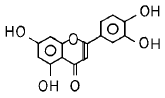
- aurone
- flavone
- flavonol
- antocyanidin
(정답률: 78%)
49. 리그닌이 목재부후균에 의해 분해되어 변하는 색깔은?
- 백색
- 갈색
- 흑색
- 청색
(정답률: 70%)
50. 클라손(Klason) 리그닌 정량법에 사용되는 약품은?
- 25 % 브롬화 아세틸
- 10 % 브롬화 아세틸
- 72 % 황산
- 60 % 황산
(정답률: 79%)
51. 목재 내의 Arabinogalactan은 물로 용이하게 추출할 수 있다. 가장 큰 이유는?
- 저분자량 물질이므로
- 세포내강에 분포하므로
- 알칼리성을 띠므로
- 변재부에 주로 분포하므로
(정답률: 82%)
52. 소나무 심재에 존재하는 stilbene 의 일종이며, 아황산 증해를 저해하는 아래 구조식을 갖는 화합물은?
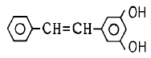
- chloropholin
- pterosilbene
- resveratrol
- pinosylvin
(정답률: 44%)
53. 다음 중 리그닌의 화학적 기본구조를 나타낸 것은?
- C6 - C1
- C6 - C2
- C6 - C3
- C6 - C4
(정답률: 77%)
54. 비스코스(Viscose) 제조와 관계가 없는 것은?
- NaOH
- Cellulose
- CS2
- Cadoxen
(정답률: 65%)
55. Cellulose가 생합성될 때 관계하는 당의 뉴클레오타이드는?
- Uridine
- Guanosine
- UDP-D-글루코오스
- GDP-D-글루코오스
(정답률: 39%)
56. 리그닌에 관한 설명으로 옳지 않은 것은?
- 고분자 무정형물질이다.
- 페닐프로판 구조 단위이다.
- 메톡실기를 갖고 있다.
- 산 가수분해가 쉽다.
(정답률: 72%)
57. 만노오스, 갈락토오스 및 글루코오스가 축합된 다당류의 일종으로서 침엽수에 많이 함유되어 있고 전 헤미셀룰로오스의 1~5 % 정도 차지하는 것은?
- 아라비노갈락탄
- 글루코만난
- 갈락토글루코만난
- 아라비노글루쿠로노자이란
(정답률: 34%)
58. 헤미셀룰로오스를 구성하는 단당류가 아닌 것은?
- Arabinose
- Glucose
- Mannose
- Allose
(정답률: 80%)
59. 탈지시료를 사용하여 분석하는 성분은?
- 냉수추출물
- 알칼리추출물
- 전섬유소
- 회분
(정답률: 48%)
60. 피브릴(fibril)의 배열이 거의 수직으로 배열된 곳은?
- 세포간층
- 2차벽의 내층
- 2차벽의 중층
- 2차벽의 외층
(정답률: 64%)
4과목: 임산제조학
61. 백탄의 탄소 함유량은?
- 58 ~ 66 %
- 68 ~ 76 %
- 78 ~ 86 %
- 88 ~ 96 %
(정답률: 58%)
62. 다음은 열경화성 수지와 열가소성 수지를 짝지워 놓은 것이다. 이중 잘못된 것은?
- 요소계, 폴리비닐알코올
- 에폭시수지, 아크릴 수지
- 폐놀계, 네오프렌
- 멜라민계, 니트로셀룰로오스
(정답률: 28%)
63. 파아티클 보오드 제조시 포밍(forming)할 때 쓰이는 분배기구 중 옳지 않은 것은?
- 장망식 기구
- 진동피더(feeder)
- 공기 분배기구
- 롤러산포기
(정답률: 58%)
64. 황화도(黃化度)가 크라프트 펄프화의 탈리그닌에 미치는 영향을 기술한 것 중 옳은 것은?
- 황화도가 높을수록 탈리그닌 속도는 촉진되고 증해 반응의 활성화 에너지는 감소한다
- 황화도가 높을수록 탈리그닌 속도는 저하되고 증해 반응의 활성화 에너지는 증대된다
- 황화도가 낮을수록 탈리그닌 속도는 촉진되고 증해 반응의 활성화 에너지는 감소한다
- 황화도가 낮을수록 탈리그닌 속도는 저하되고 증해 반응의 활성화 에너지는 증대된다
(정답률: 43%)
65. 송풍(送風)을 역회전 시키는 시간을 짧게 하는 경우가 아닌 것은?
- 건조가 빠를 때
- 재간(材間) 풍속이 낮을 때
- 온도가 높을 때
- 건조하기 쉬운 목재를 건조할 때
(정답률: 34%)
66. 농산법에 의한 목재당화에 관한 기술 중 옳지 않은 것은?
- 전가수분해, 주가수분해, 후가수분해로 나눈다.
- 전가수분해는 헤미셀룰로우즈를 가수분해한다.
- 농산법에는 농염산법과 농황산법이 있다.
- 후가수분해는 농도를 높혀 마지막으로 가수분해를 한다.
(정답률: 75%)
67. 파아티클 보오드의 제조는 목재 자원의 집약적 이용과 목재의 특성을 살려서 만든 것이다. 그 특성에 맞지 않는 것은?
- 목적 하는대로 크기, 비중(강도)을 자유로이 할 수 있다.
- 방향에 의한 수축팽창의 차가 거의 없다.
- 단열성, 방음성이 합판보다 높다.
- 가공이 어렵다.
(정답률: 65%)
68. 벨기우스 당화법과 밀접한 관계가 있는 것은?
- 농 황산
- 농 질산
- 농 염산
- 묽은 황산
(정답률: 25%)
69. 지력 증강제(紙力 增强制)로서 사용되고 있는 첨가제를 열거한 것 중 건조 지력증강제가 아닌 것은?
- 전분
- 식물검질(Vegetable gums)
- CMC(Carboxymethyl cellulose)
- 멜라민. 포르말린 수지
(정답률: 50%)
70. 자연순환식 건조실의 방열면적은 열량계산에 의하여 정하여지나 개략적인 값으로 건조실 용적 1 m3에 대하여 몇 m2 가 적당한가?
- 1.5 ~ 2.5 m2
- 2.5 ~ 3.5 m2
- 3.5 ~ 4.5 m2
- 4.5 ~ 5.5 m2
(정답률: 43%)
71. 현재 우리나라에서 있어서 가장 널리 사용하고 있는 단판제조 방법은?
- sliced veneer 법
- sawed veneer 법
- half round cutting veneer 법
- rotary-cut veneer 법
(정답률: 77%)
72. 가로 및 세로가 각각 100 mm, 두께 9 mm 인 particle board 의 기건중량이 67.5 g 일 때 이의 기건비중은?
- 0.25
- 0.50
- 0.75
- 1.00
(정답률: 62%)
73. 계면(界面)을 넘어 서로 확산됨으로써 피착제와 접착제가 결합된다는 이론은?
- 분자간 인력설
- 표면에너지설
- 혼합확산이론
- 확산이론
(정답률: 45%)
74. 발형치진(swage set)에 가장 관계되는 것은?
- 옛날부터 사용되어온 치진이다.
- 둥급톱에 주로 사용된다.
- 작은 띠톱에 주로 사용된다.
- 제재용 띠톱에 주로 사용된다.
(정답률: 58%)
75. 유지(油脂) 또는 납(蠟)1 g 중에 들어있는 유리 지방산을 정화하는데 소요되는 수산화 나트륨의 ㎎ 수를 무엇이라 하는가?
- 알칼리가
- 산가
- 검화가
- 에스테르가
(정답률: 45%)
76. 목재를 건조했을 때 내부와 외부의 응력이 다르므로 생기는 현상을 무엇이라 하는가?
- 찌그러짐(collapse)
- 봉소열, 내부할열(honey combing)
- 표면 경화(casehardening)
- 뒤틀림(twisting)
(정답률: 63%)
77. 종이를 착색하는데 적용되는 착색방법이 아닌 것은?
- 원질 착색법
- 표면 착색법
- 가공 착색법
- 광택 착색법
(정답률: 34%)
78. 아황산 pulp 제조시 증해 종점의 결정 방법으로 일반적인 사용 방법은?
- 비중 측정법(比重測定法)
- 비색법(比色法)
- 자외선 흡광도법(紫外線吸光度法)
- 고분자 아민법(高分子 amine 法)
(정답률: 69%)
79. 칼끝은 섬유방향과 직각이며 절삭방향은 섬유방향에 평행인 2차원 절삭에 관한 기술 중 옳은 것은?
- 절삭응력은 레이크각(Rake angle)과 부의 상관관계가 있다.
- 수평분력은 목재밀도와 부의 상관관계가 있다.
- 최대 절삭응력은 함수율과 정의 상관관계가 있다.
- 절삭깊이는 수평분력과 상관관계가 없다.
(정답률: 42%)
80. 목재 중에 섬유소(cellulose)가 60 % 함유되어 있다. 이것을 가지고 가수분해 할 때 얻을 수 있는 포도당(glucose)의 이론치는?
- 55.5 %
- 66.6 %
- 77.7 %
- 88.8 %
(정답률: 74%)
5과목: 목재보존학
81. 크롬· 구리· 비소화합물(CCA)계 목재방부제의 성분 중 목재내 방부제의 유효성분이 정착하는 작용을 하는 성분은?
- 크롬화합물
- 구리화합물
- 비소화합물
- 불소화합물
(정답률: 57%)
82. 다음의 곤충류 중 국내 고건축물에 피해를 가장 많이 주고 있는 종류는?
- 바구미과(Curculionidae)
- 하늘소과(Cerambycidae)
- 가루나무좀과(Lyctidae)
- 빗살수염벌레과(Anobiidae)
(정답률: 50%)
83. 방부처리재의 방부제 침윤도와 흡수량의 단위를 옳게 나타낸 것은?
- cm - kg/m3
- % - kg/m3
- cm - g/cm3
- % - liter/m3
(정답률: 83%)
84. 금속화 목재의 특성에 대한 설명이다. 다음 중 옳지 않은 것은?
- 비중이 증가한다.
- 열전도도가 감소한다.
- 경도가 증가한다.
- 전기전도도가 증가한다.
(정답률: 94%)
85. 다음 방부제 중 수용성 방부제가 아닌 것은?
- CCA
- ACC
- 크레오소오트유
- CCB
(정답률: 64%)
86. 미처리재의 팽창율이 10 % 이고 처리재의 팽창율이 4% 라면 내팽창효과(AE)는 얼마인가?
- 4 %
- 6 %
- 60 %
- 125 %
(정답률: 43%)
87. 셀룰로오스를 주로 분해하고 리그닌을 남기는 목재 부후균은?
- 갈색부후균
- 백색부후균
- 녹색부후균
- 흑색부후균
(정답률: 77%)
88. 방부처리의 준비작업 중 가장 중요한 것은 목재의 건조인데 이 건조의 목적에 맞지 않는 것은?
- 무게를 감소 시킨다.
- 약제가 깊게 균일하게 침투시킨다.
- 목재의 강도를 증가 시킨다.
- 약제의 침투량을 많게 한다.
(정답률: 63%)
89. 목재의 가소화 처리에 대한 기술 중 옳지 않은 것은?
- 증기처리로 가소화한 후 치구에 의하여 목재의 파단을 최소로 줄인다.
- 요소의 농축 용액을 주입하고 가온하면 쉽게 가소화 시킬 수 있다.
- 액체 암모니아 처리로 매우 적은 목재라도 쉽게 가 소화 시킬 수 있다.
- 보통 침엽수가 활엽수보다 더 쉽게 구부러진다.
(정답률: 69%)
90. 대기 중의 온습도 변동에 따라 목재의 치수변화를 억제 하는 방법 중 잘못된 것은?
- 표면의 도장처리
- 목재 성분간에 화학물질의 가교
- 친수성기를 소수성기로 화학 수식
- 소수성 물질을 세포내강에 충진
(정답률: 34%)
91. 다음 중 목재 부후균에 대한 설명 중 맞는 것은?
- 목재부후균은 자낭균에 속하며 지금까지 밝혀진 부후균은 약 10,000 종에 달한다.
- 목재 속으로 들어간 균사는 목재의 세포내에 함유되어 있는 추출성분을 이용하여 생장하고, 효소를 분비하여 목재의 세포벽을 구성하는 주성분들을 분해 한다.
- 목재의 부후는 부후시키는 균류의 균사 색에 따라 갈색부후(brown rot)와 백색부후(white rot)으로 구분한다.
- 갈색부후균은 주로 리그닌을 가해하여 분리하므로, 피해목재를 분해하여 분석하면 셀룰로오스의 양은 그다지 줄지 않음을 알수 있다.
(정답률: 94%)
92. 히라다가루나무좀은 다음과 같은 가해 특징을 갖는다. 이와 관계가 적은 것은?
- 히라다가루나무좀은 목재내 영양분에 관계없이 아무 나무에 피해를 준다.
- 함수율이 30 % 이하의 건조재를 많이 가해한다.
- 전분량이 높은 목재에서는 유충은 잘 생육하나 전분이 없는 목재는 피해를 받지 않는다.
- 라왕을 비롯하여 졸참나무, 오동나무, 대나무, 느티나무 등에 피해를 많이 준다.
(정답률: 56%)
93. 다음 중 방부제의 구비요건이 아닌 것은?
- 안정성
- 영구성
- 방부효력
- 색상
(정답률: 69%)
94. 가루나무좀의 방충제로 쓰이는 약제와 관계 있는 것은?
- 클로르덴
- 클로르피리호스
- 아마인유
- IPBC
(정답률: 40%)
95. 열대, 아열대에 많이 분포하며 남양재 특히 나왕의 경우이 과의 해충이 많이 붙어 생재의 변재 또는 심재에 깊은 구멍을 뚫기 때문에 Pin-hole borer로서 알려지고 있는 곤충은?
- 긴나무좀과(Platypodidae)
- 나무좀과(Scolytidae)
- 하늘소과(Cerambycidae)
- 가루나무좀과(Lyctidae)
(정답률: 57%)
96. 약제 주입의 전처리에 있어서 그 목적과 무관한 것은?
- 약제가 잘 침투하도록 도우는 것
- 변색· 오염 등을 예방하기 위한 것
- 약제가 균일하고 깊게 침투하도록 도우는 것
- 목재의 강도를 증강시키는 것
(정답률: 69%)
97. 목재의 고유의 물리적 성질 중 내화 성능에 효과가 없는 것은?
- 표면에 탄화층을 형성하기 어렵고 이것에 의하여 산소공급이 저지된다.
- 다공질로 열 전도율이 낮다.
- 열 팽창이 적어 가열에 의한 내부 응력의 발생이 적다.
- 명확한 2차 전위점이 없고 금속재와 같이 변형을 일어키지 않는다.
(정답률: 50%)
98. 다음 약제 기호 중 수용성 방부제가 아닌 것은?
- ACZA
- ACQ
- CCA
- 클레오소트
(정답률: 65%)
99. 아래의 피복처리 중 발습효과(moisture excluding efficiency)가 가장 높은 것은?
- 니스칠과 유성페인트 사이에 알루미늄박(泊)을 사용한 것
- 프리머 사용 후 안료를 사용한 유성페인트로 2회 피복한 것
- 니스, 에나멜 또는 질산 셀룰로우즈 래커로 2회 피복한 것
- 아마인유로 5회 도장후 왁스로 2회 도장한 것
(정답률: 42%)
100. 생나무에 고농도의 약제를 이용하여 가장 효과적으로 처리할 수 있는 방부처리법은?
- 바르는 법
- 뿜는 법
- 확산법
- 뤼핑법
(정답률: 64%)